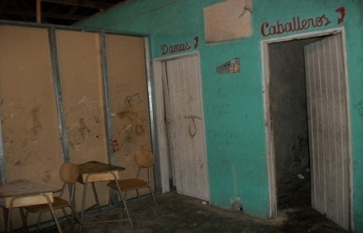
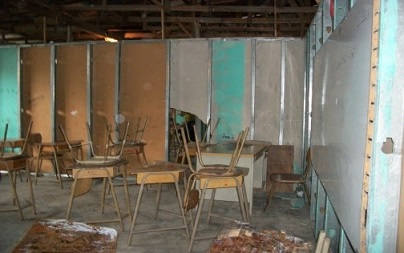

Reseña histórica
El Liceo de San Rafael está ubicado en la provincia de Limón, cantón de Pococí distrito La colonia y el barrio San Rafael. Este liceo fue creado por la necesidad de la comunidad, el cual tuvo como impulsora a la señora Rosibel Aguilar Quesada la cual era miembro de un comité Pro Mejoras San Rafael integrado por las siguientes personas:
Jerónimo Angulo Angulo.
Horacio Alfaro Vargas.
José Manuel Vargas Araya.
Patricia Aguilar Araya.
Eduardo Vargas Araya.
Kattia Chávez Jiménez.
Rodolfo Aguilar Quesada.
El viceministro de Educación Don José Abelino dio el visto bueno de la creación del colegio también conto con el apoyo del diputado Jorge Méndez. La institución se fundó en el año 2007 como una institución de III ciclo, iniciando labores en las instalaciones de una iglesia protestante ubicada en el cruce del Súper San Miguel y una casa de habitación por la cual pagaban 120 000 colones de alquiler, la cual abarcaba la parte administrativa de la institución. Su primer director el Lic. William Vega con una población de 126 estudiantes, brindando hasta el noveno año de la Educación General Básica. En el 2008 se trasladan al salón comunal, el cual era propiedad de la C.C.S.S. allí se laboró hasta el 2010, el cual no presentaba las instalaciones adecuadas.  La institución cuenta con un terreno donado por la Asociación de Desarrollo de La Colonia de una hectárea aproximadamente, en el cual se construirá la planta física de la institución; con una inversión de de esta asociación se permitio la construcción de tres pabellones cada uno con 6 aulas cada uno y 1 batería de baños, un comedor estudiantil, un laboratorio de cómputo y dos áreas administrativas la primera área (Dirección, secretaria y sala de profesores) y otra área para Orientación y la Coordinación Académica.